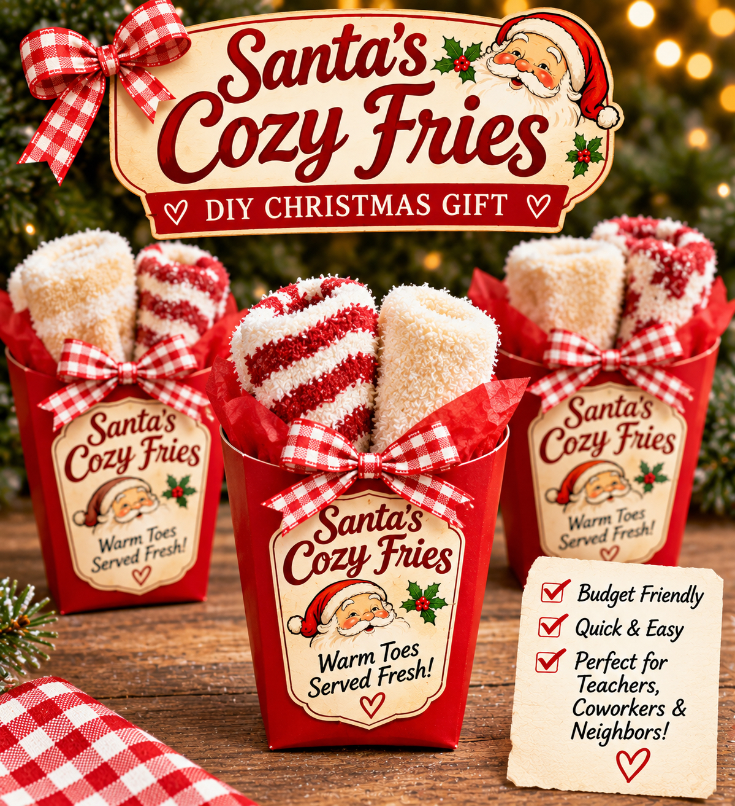

CHRISTMAS / TEACHER GIFTS / EASY DIY
Santa's Cozy Fries
A little red French-fry favor box becomes a cozy Christmas gift! Tuck in one pair of fluffy socks, finish with a vintage Santa label and gingham ribbon, and give a practical stocking stuffer that looks extra festive.

MAKE IT YOURSELF
Five easy steps
- Choose your carton. Use a clean, unused red cardboard French-fry favor box large enough for one rolled pair of socks. Check the dimensions before ordering.
- Roll the socks. Fold or roll one pair of cream, white or festive fuzzy socks into two compact upright bundles. Arrange them side by side, like oversized cozy fries.
- Fill the box. Add a small piece of red tissue paper if needed to support the socks. Avoid overstuffing; the pair should sit naturally in the carton.
- Add a vintage label. Attach a decorative Santa's Cozy Fries label to the flat front of the carton. Try the tagline “Warm Toes Served Fresh!”
- Finish with a bow. Tie red-and-white gingham ribbon or baker's twine around the front, keeping the socks easy to remove.
Label sizing
Start with a 2.5 × 3-inch vertical front label, or scale it down to fit your actual fry carton. Print a test on ordinary paper before using cardstock or adhesive labels.
Estimated budget
Plan around $2–$4.50 per gift using budget fuzzy socks and multipack favor cartons, excluding shipping and tax. This is a planning estimate, not a verified current price. Each gift contains one pair of socks, not several pairs.
Make it practical: Use a carton that can actually hold the socks you buy. Choose one pair per carton, and don't rely on the styled inspiration image as a scale-accurate packing guide.